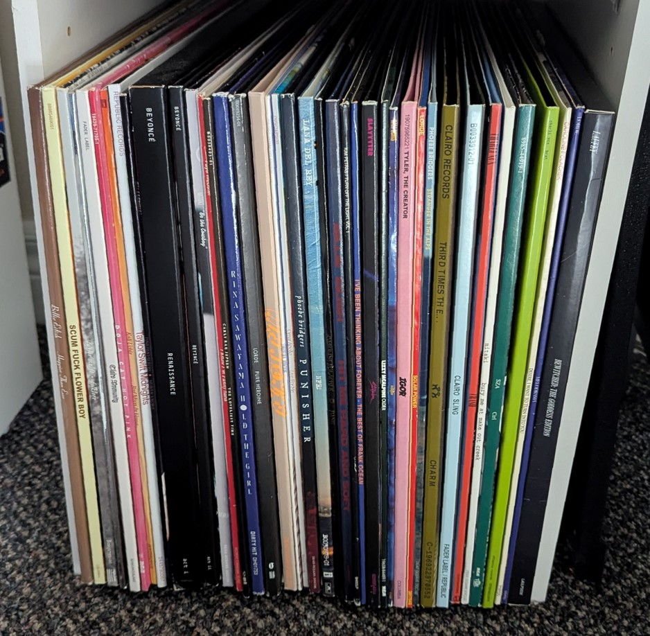
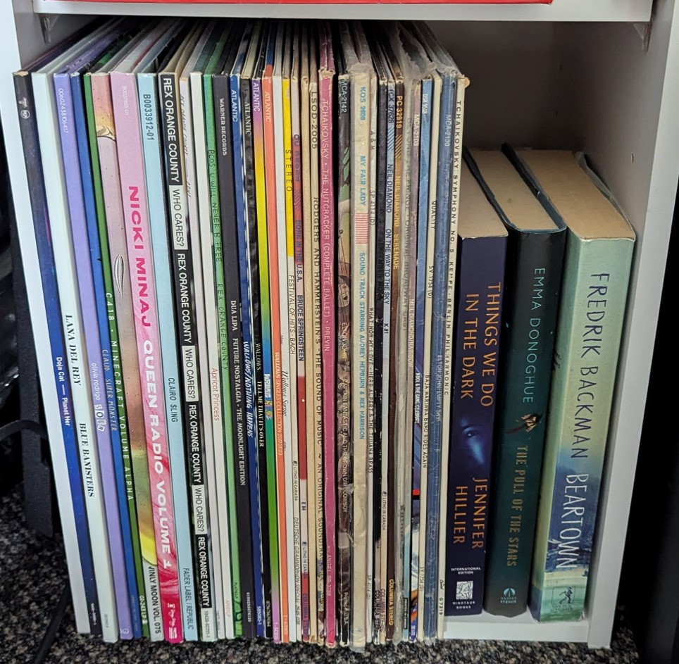

My Record Collection
Languages and Skills: C++, Qt, APIs, Multithreading, UI, UX
My Record Collection
(MRC) is the first large project I have taken up on my own. Using knowledge I gained in and
outside of class, I decided to try and solve a problem I found myself facing when I was trying to
pick a record from my record collection that I wanted to listen to; I could not decide from my
collection what record I was in the mood to hear. I found my collection of around 70 records to be
quite daunting when I wanted to listen to music. Sometimes I would even just give up and do
something else. What I wished for was an app where I could see all my records and sort them by their
genres and my own personal rating that I had for them. And if you know much about music—no, Discogs
is not quite what I was looking for. However, I eventually integrated it into my app in a way.
I had just finished my first term of third year and in my CS3307: Objected-Oriented Design and
Analysis course, we were tasked with coming up with our own idea for a software and making it in
C++. We came across the Qt development framework and used it to make an (admittedly not very great)
music player with playlists and a queue called Spotishy. So, during the winter reading week, I got
to work to solve my problem using Qt. I had a rough idea of what I wanted it to do. It should be
able to search and find any record using an API, I used last.fm. It should be able to save and
record from last.fm locally. The user should be able to give these local records a rating out of 10
and any tag that they want. Finally, the user should be able to sort the collection by those ratings
and tags.

MRC 1.0.0
This is what I ended up with for my first (mostly) working
version of the app. It got the basics of what I wanted it to be able to do down. Adding
record, tags, and ratings. I found myself actually wanting to use the app to pick what
to listen to and I even started listening to my records more. I considered it a success.
Over the course of about half a year I continued to make incremental updates to the app with feedback
from friends that saw and used the app and adding things I wanted it to be able to do. Below are
features I added with each minor version increment.
v1.1.0
- Suggested tags from genres on Wikipedia
- Themes (dark and light)
- Record counter
v1.2.0
- Import Discogs collection (multi-threaded)
- Saved preferences
- Checkmarks in tag menus
- Delete records and tags
- Reset filters
- Pick a record for me
- About and contact info
v1.3.0
- Edit record attributes
- Create a custom record
- Progress bar for Discogs import
- Tag count in sort list
- Export data
- Filter by rating
v1.4.0
- Added "Released" and "Date Added" attributes
- Resizable window
- Hide columns from record table
After v1.4.0, I felt like I was mostly "done" so I spent some time figuring out how to compile the
app on a Mac so I could give my Mac user friends a version they could use. Plus, I made some minor
adjustments here and there that I wanted that didn't feel major. I made some performance
improvements through threading and grouping elements, I added a loading animation for album covers,
I improved the "sort by" dropdown to be less confusing, and finally I made a few big fixes.

MRC 1.4.5
MRC 1.4.5 is where I am currently at now with the app. I
really like it, I use it all the time, and I always keep my collection up-to-date. Check
out this version here to download and try it out. Just download the
zipped "Source code" and run the precomplied app in the "My Record Collection-xxx"
folder that matches your OS. To use the app, all you need is the folder matching your
OS.
I don't currently have many other plans for it. I've thought about adding some kind of data
analysis/graphing feature to show a user's collection in another way kind of Spotify Wrapped-esque
because I especially like currently being able to see how many records of each genre I have as I
find it interesting. I also think it would be really cool if the app was able to be an online
service
that had user data stored in the cloud, and you could sign in to it from any device and it synced
across devices, but that's for v2.0.0 if it ever comes to fruition.


My Collection
As an extra, here are photos of my collection. On the left are the records I
listen to most and on the right, the least